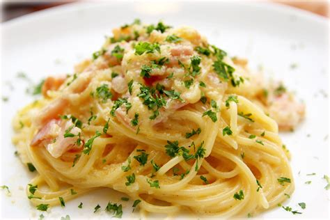

Pasta Carbornara

The recipe of pasta carbonara it is one of the most classics italian recipes. Very simple and pratical to cook, the pasta carbonara take a few ingridients and is very tasty.The recipe for pasta a carbonara is one of the most classic Italian recipes. Very simple and practical to prepare, the pasta the carbonara takes few ingredients and is very tasty. Being consumed since Ancient Rome, legend has it that its "carbonara" comes from the word "carbone", which means coal in Italian, because it was consumed by coal preparers in the Alps of Italy.
Ingredients
- 2 teaspoons olive oil
- 1 pound guanciale (cured pork cheek), diced
- 1 (16 ounce) package spaghett
- 3 large eggs
- 10 tablespoons grated Pecorino Romano cheese,divided
- salt and ground black pepper to taste
Step-by-Step
- Heat olive oil in a large skillet over medium heat; add guanciale. Cook, turning occasionally, until evenly browned and crispy, 5 to 10 minutes. Remove from heat and drain on paper towels
- Bring a large pot of salted water to a boil. Cook spaghetti in the boiling water, stirrring occasionally until tende yet firm to the bite, about 9 minutes. Drain and return to the pot. Let cool, stirring occasionally, about 5 minutes
- Whisk eggs, 1/2 of Pecorino Romano cheesem and some black peeper ina a bowl until smooth and creamy. Pour egg mixture over pasta, stirring quickly, until creamy and slightly cooler. Stir in guanciale. Top with remaining Pecorino Romano chesse and more black pepper.